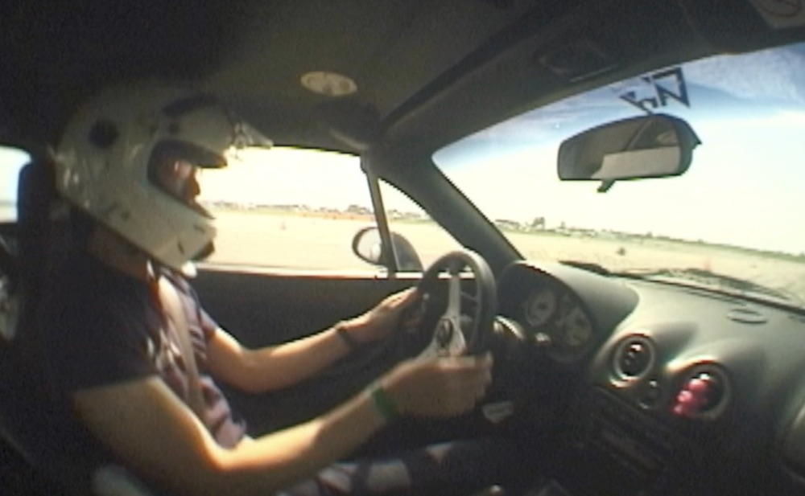
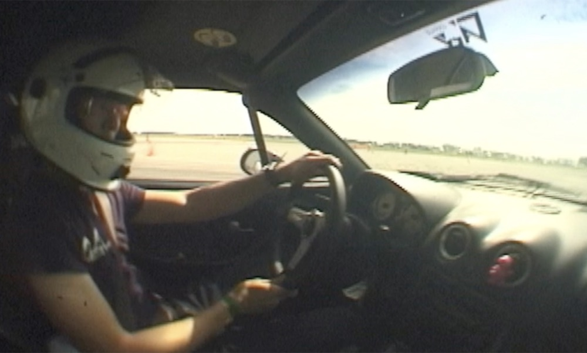
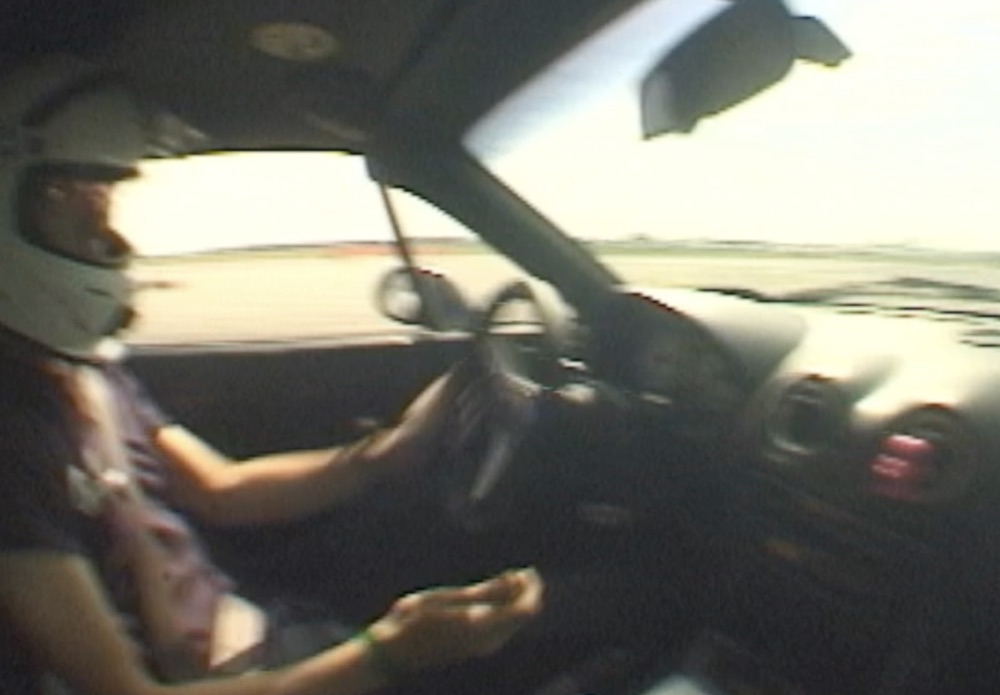
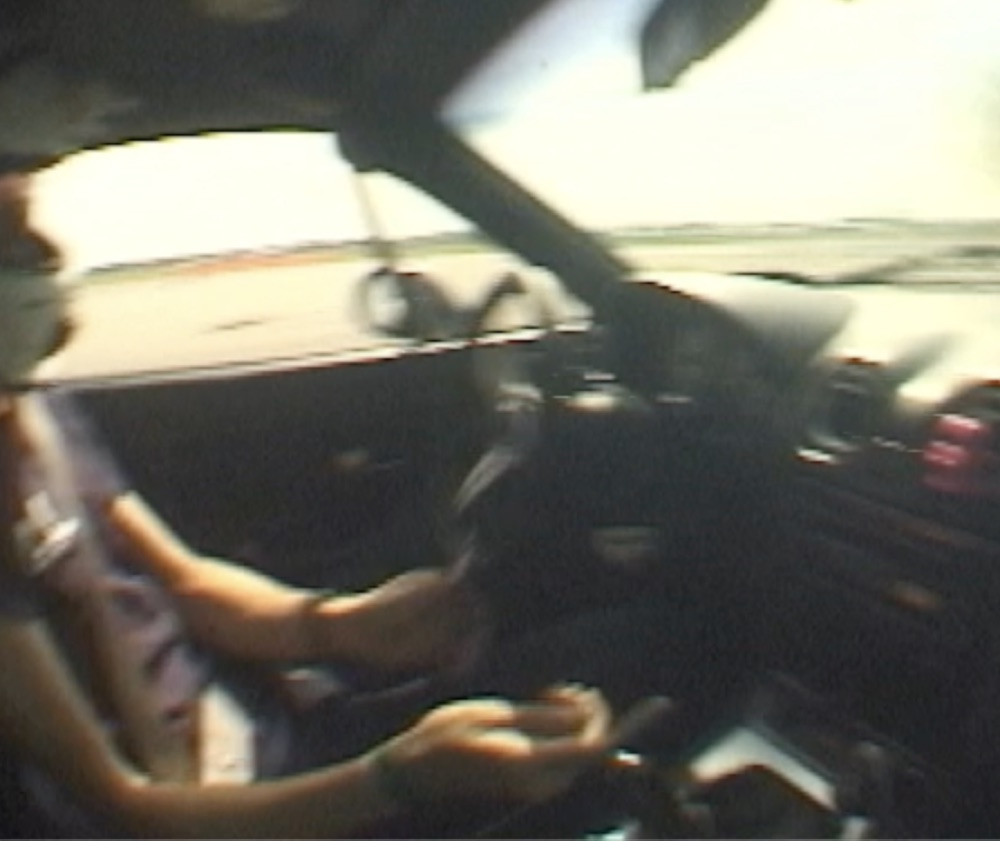
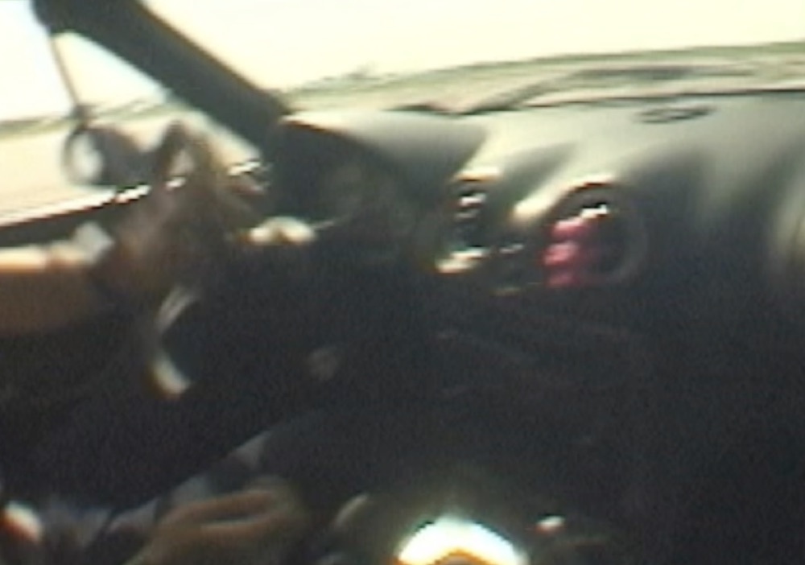
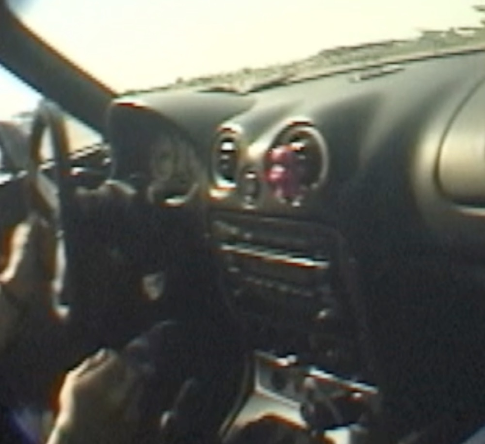

- Sliding: Steady slide turning left with the right side of the car leading

2. Initiation: Pull the car to initiate weight for transition to right turn

3. Self Steer: Car will self steer to compensate for new slide as car crosses equilibrium. Ideally your door side hand is always on the wheel. Professionals vary on how long they like to keep their off hand on the wheel.

4. Keeping control: The habit of “Jazz hands” (releasing the wheel with both hands) is a common habit new drivers build which eventually hurts their improvement ceiling later on. Keeping your hand on the wheel AND keeping the intentional input from mind to hand maintains the communication between car and driver.


5. Catch: The car should be swung around to the new direction, your hand should be around a controllable area again. Throughout the motions there should always be some kind of pulling from hand to wheel as intentional from the driver. This is the most important detail that images and video cannot show as intent and touch is the only way the steering wheel can communicate.
